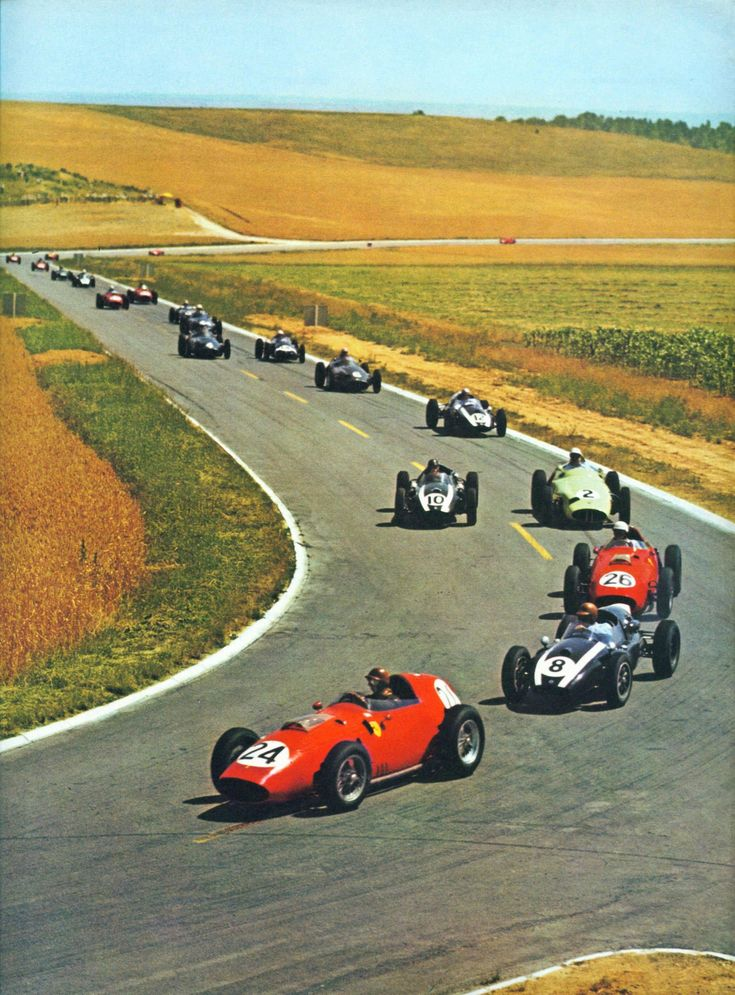
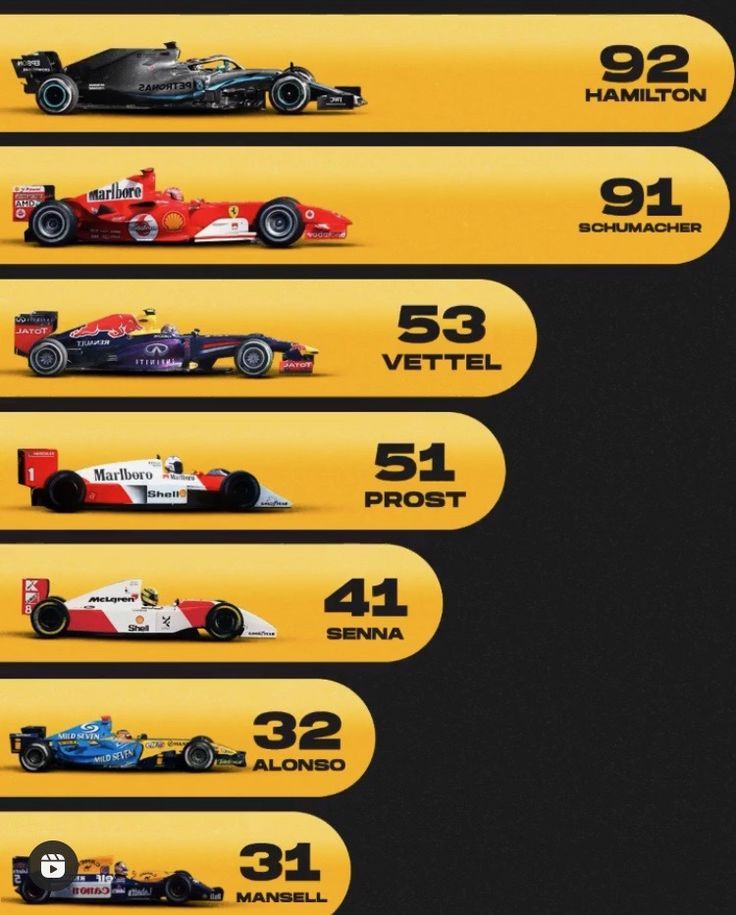

Historia de la F1 🏁
El Campeonato Mundial de Fórmula 1 de la FIA, más conocido como Fórmula 1, F1 o Fórmula Uno, es la principal competición de automovilismo internacional y el campeonato de deportes de motor más popular y prestigioso del mundo. La entidad que la dirige es la Federación Internacional del Automóvil (FIA). Desde septiembre de 2016, tras la adquisición de Formula One Group, la empresa estadounidense Liberty Media es la responsable de gestionar y operar el campeonato.
El primer Gran Premio se realizó el 13 de mayo de 1950 en el circuito de Silverstone y fue ganado por el italiano Giuseppe Farina, consiguiendo además el campeonato de 1950 tras vencer a su compañero de equipo, el argentino Juan Manuel Fangio (ambos en la escudería Alfa Romeo). Sin embargo, Fangio ganó el título en 1951, 1954, 1955, 1956 y 1957. Su racha fue interrumpida debido al bicampeonato del piloto de Ferrari Alberto Ascari. También en esta época se vieron pasar pilotos como el británico Stirling Moss que aunque pudo competir con regularidad, nunca fue capaz de ganar el Campeonato Mundial, y por ese motivo los ingleses lo consideran «el conductor más grande que nunca ganó un título mundial.
A lo largo de las décadas ha evolucionado en tecnología, reglamentos y espectáculos. Grandes momentos como las rivalidades entre Senna y Prost, los récords de Schumacher y Hamilton, o la era Híbrida con dominio de Mercedes y Red Bull, han marcado su historia.
A cada carrera se le denomina Gran Premio y el torneo que las agrupa es el Campeonato Mundial de Fórmula 1. La mayoría de los circuitos de carreras donde se celebran los Grandes Premios son autódromos, aunque también se utilizan circuitos callejeros y anteriormente se utilizaron circuitos ruteros. A su vez, los automóviles utilizados son monoplazas con la última tecnología disponible, siempre limitadas por un reglamento técnico; algunas mejoras que fueron desarrolladas en la Fórmula 1 terminaron siendo utilizadas en automóviles comerciales, como el freno de disco.[
Equipos F1
Ferrari

Fundado en 1950, es el equipo más exitoso y longevo de la F1.
McLaren

Con una rica historia desde los 60, ganó títulos con Senna y Prost.
Mercedes

Dominó la era híbrida desde 2014 con Hamilton y Rosberg.
Red Bull

Innovador y agresivo, ganó 4 títulos y ahora domina con Verstappen.
Williams

Campeones históricos en los 80 y 90. Su legado es icónico.
Alpine

Sucesor de Renault. Ganó títulos con Alonso en 2005 y 2006.
Aston Martin

Renació como marca en F1 en 2021. Diseño elegante y apuesta fuerte.
Haas

Equipo estadounidense desde 2016. Siempre luchando.
Racing Bulls

Equipo hermano de Red Bull, antes Toro Rosso. Primer victoria de Vettel.
Kick Sauber

Sauber compite como Stake F1 y colaborará con Audi. Fuerte historia.
Pilotos Temporada 2025

Max Verstappen 3 veces campeón mundial. Piloto de Red Bull Racing.
Países Bajos – Red Bull Racing. Campeón dominante desde 2021.

Yuki Tsunoda Piloto japonés de Red Bull (ex AlphaTauri). Rápido y consistente.
Japón – Red Bull (ex AlphaTauri). En desarrollo sólido.

Lewis Hamilton 7 veces campeón del mundo. Ahora con Ferrari.
Reino Unido – Ferrari. Busca cerrar su carrera con el equipo legendario.

Charles Leclerc Piloto monegasco de Ferrari. Especialista en clasificaciones.
Mónaco – Ferrari. Rápido a una vuelta, busca consolidarse campeón.

Lando Norris Británico, piloto estrella de McLaren. Muy popular y constante.
Reino Unido – McLaren. Talento joven con gran popularidad.

Oscar Piastri Australiano, futuro campeón según expertos. Piloto de McLaren.
Australia – McLaren. Rápido y preciso, futura estrella.

George Russell Piloto británico, líder de Mercedes tras Hamilton.
Reino Unido – Mercedes. Asume liderazgo tras salida de Hamilton.

Kimi Antonelli Joven promesa italiana, hijo de Marco Antonelli.
Bolonia, Italia – Hijo del piloto de autos deportivos Marco Antonelli.

Alexander Albon Piloto tailandés, regreso sólido a la parrilla.
Tailandia – Piloto talentoso con gran historia en la F1.

Carlos Sainz Español, consistente y competitivo, ex Ferrari.
España – Piloto fuerte, rápido y confiable.

Pierre Gasly Francés, ganador de carrera, piloto de Alpine.
Francia – Alpine. Talento con victoria, en consolidación.

Franco Colapinto Joven talento argentino, nuevo piloto Alpine.
Australia – Alpine. Promovido piloto titular en 2025.

Fernando Alonso El veterano de la F1, bicampeón mundial. Aston Martin.
España – Aston Martin. El más experimentado y ambicioso.

Lance Stroll Canadiense, piloto de Aston Martin.
Canadá – Aston Martin. Busca regularidad en su rendimiento.

Esteban Ocon Francés, nuevo piloto Mercedes. Talento probado.
Francia – Mercedes. Nuevo en el equipo, busca demostrar su valor.

Oliver Bearman Británico, joven promesa de Ferrari, debutó en 2024.
Reino Unido – Haas. Promesa de Ferrari, debutó en 2024.

Liam Lawson Neozelandés, piloto reserva Red Bull, fuerte potencial.
Nueva Zelanda – Piloto reserva Red Bull con gran talento.

Isaac Hadjar Francés, piloto de Stake F1 (Sauber), proyección hacia Audi.
Finlandia – Stake F1 (Sauber). Líder del equipo hacia Audi.

Gabriel Bartoletó Brasileño, debutante, esperanza nacional para la F1.
Brasil – Debut en F1 y esperanza nacional.

Nico Hülkenberg Alemán, veterano de la parrilla, conocido por su experiencia.
Alemania – Piloto con talento pero sin equipo elite.
Pistas Legendarias de la F1
Monte Carlo (Mónaco)
La joya de la corona de la F1, Mónaco es un circuito urbano que exige la máxima precisión y habilidad de los pilotos debido a sus estrechas calles y barreras.
Spa-Francorchamps (Bélgica)
Un circuito largo y desafiante con múltiples climas dentro de la misma carrera, famoso por sus curvas rápidas y la icónica Eau Rouge.
Misano (Italia)
La pista se conoce oficialmente como misano world circuit Marco Simoncelli, en honor al fallecido piloto nacido en Cattolica mientras que antes de 2006 se llamaba Circuito internazionale Santa Monica.
Suzuka (Japón)
El único circuito en forma de 8, técnico y muy querido.
Nelson Piquet (Brasil)
Circuito de Nelson Piquet, conocido por su alta velocidad y su alta calidad de pista.
Nuerburgring (Alemania)
El circuito consta de dos secciones: el Nordschleife (circuito norte) y el circuito moderno de Fórmula 1. El Nordschleife, conocido como "Infierno Verde", es famoso por su longitud y dificultad, mientras que el circuito de Fórmula 1 es un trazado más corto y seguro